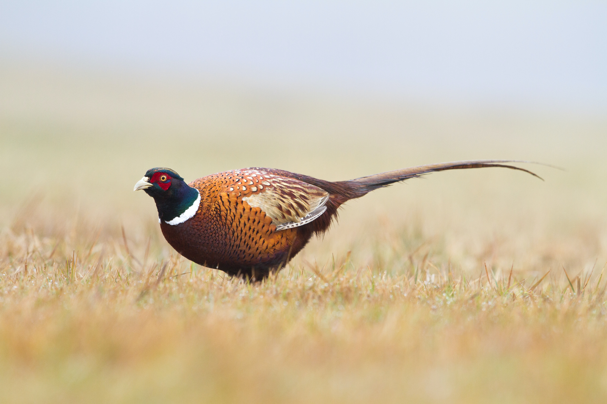

JAPANESE BLUE PHEASANT _Phasianus colchicus versicolor_
(also versicolor or green pheasant)

DESCRIPTION: Male about 27″, female 20″. _Male_: Has a blue-green back,
iridescent green or purple breast, and long tail feathers. Appears
darker than the ring-necked pheasant and lacks the white collar.
_Female_: Brownish birds with long tails, indistinguishable from the
ring-necked hen.
PARK DISTRIBUTION: Introduced from Japan prior to 1900. Has lost its
identity on most islands due to hybridization with the ring-neck.
Kilauea—The park includes perhaps the best habitat in the islands for
this species. Pure Japanese blue males are common along the Mauna Loa
Strip road and occasional on the Chain of Craters road or the Crater Rim
drive and to the west. Hybrids will also be seen. Haleakala—Nearly all
are ring-necked pheasants here.
VOICE: The cock-crow is similar to that of the ring-neck, but somewhat
higher in pitch.
This species has adapted to the moist open-forest and grassland, while
the ring-neck prefers drier areas. Blues seem to have established a
niche on the southern slopes of Mauna Loa between 4,000 and 7,000 feet
elevation where mists are frequent, sometimes for days at a time.
[Illustration: _American golden plover in winter plumage_]
AMERICAN GOLDEN PLOVER _Pluvialis dominica_
(Hawaiian name—kolea)
DESCRIPTION: 10″-11″. A medium sized shore bird with a straight,
inch-long bill. _Winter plumage_—mottled brown spotted with gold; buffy
breast. _Summer plumage_—striking pattern; back spotted with gold, black
undersides, and a white band over the forehead and down the sides of the
neck and breast. Plovers don their summer colors in April or May before
migration and may still retain them when they return in early August.
The only shore bird likely to be seen in the interior of either park.
PARK DISTRIBUTION: Winter migrant to the islands. Kilauea—Fairly common
locally from August to June. To be seen around Park Headquarters and on
the west side of Kilauea Crater or along the Mauna Loa Strip.
Haleakala—Common from August to June in open areas both inside and out
of the crater.
VOICE: A clear whistle _queep_, or _quee-leép_, etc., usually uttered as
the bird is flushed.
Like other migrants to Hawaii, golden plovers make a 2,000-mile (one
way) flight to and from their breeding grounds in Alaska or Siberia each
year. The trip requires about 48 hours, spent mostly over the open
ocean. When they arrive in Hawaii in the fall, individuals seem to
establish remarkably small territories—one bird may live during its
entire stay here in an area not much bigger than a large lawn. Here they
will feed on insects and berries until it is time for the annual
migration to the north.
RUDDY TURNSTONE _Arenaria interpres_
(Hawaiian name—akekeke)
DESCRIPTION: 9″. A chunky, medium sized shore bird with flashy black,
white, and russet-red markings and short orange legs. The contrasty
black and white pattern shows best in flight.
PARK DISTRIBUTION: Winter migrant to islands. Kilauea—Except for summer,
when they have migrated to Alaska, flocks are often found at rocky beach
areas around Halape, but they are uncommon elsewhere along the rugged
coast within park boundaries. Large flocks were formerly recorded inland
as far as Kilauea Crater. Haleakala—Absent from the park.
VOICE: A rapidly repeated _chut-a-chut_.
A flock of 8 or 10 turnstones will behave almost as though it was
controlled by one mind: in flight they dip and turn precisely together;
when they land it is a simultaneous action. The name turnstone comes
from their habit of flipping over small rocks with their bills to get at
the insects and other lower forms of life beneath.
WANDERING TATTLER _Heteroscelus incanum_
(Hawaiian name—ulili)
 DESCRIPTION: 11″. A large sandpiper with _uniformly dark gray_ upper
parts and a long (1½ inches) straight bill. The belly is lighter, and
there is an indistinct white line over the eye. The long legs and the
feet are yellow.
PARK DISTRIBUTION: Winter migrant to islands. Kilauea—Uncommon along the
southern rocky shoreline. Absent in summer when it migrates to Alaska.
Haleakala—Absent from the park.
VOICE: A high clear _whee-we-we-we_ usually uttered as the bird takes
flight.
Individuals feed on crabs and other marine life among the rocks. They
never appear inland in the park.
DESCRIPTION: 11″. A large sandpiper with _uniformly dark gray_ upper
parts and a long (1½ inches) straight bill. The belly is lighter, and
there is an indistinct white line over the eye. The long legs and the
feet are yellow.
PARK DISTRIBUTION: Winter migrant to islands. Kilauea—Uncommon along the
southern rocky shoreline. Absent in summer when it migrates to Alaska.
Haleakala—Absent from the park.
VOICE: A high clear _whee-we-we-we_ usually uttered as the bird takes
flight.
Individuals feed on crabs and other marine life among the rocks. They
never appear inland in the park.
WHITE-CAPPED NODDY _Anoüs tenuirostris_
(Hawaiian name—noio)
DESCRIPTION: 14″. A dark gray tern restricted to the rocky coastline.
The forehead and crown are lighter gray than the rest of the body.
PARK DISTRIBUTION: The only common bird to be seen flying just off
shore. In the park, restricted to the coastline of the Kilauea Section.
Look for these along the ocean at the Kalapana end of the park. They
flutter over the water picking up small fish, but usually they stay
close to shore. The noddies nest in sea cliffs and caves in this area.
SPOTTED DOVE _Streptopelia chinensis_
(also laceneck or Chinese dove)
DESCRIPTION: 12″. A gray-brown dove with a long rounded tail showing
white in the corners, and a broad _collar of black with white spots_ on
the neck.
PARK DISTRIBUTION: Introduced before 1900; now common below 4,000 feet
on all islands. Kilauea—Fairly common around the crater and at lower
elevations such as on the Chain of Craters and Hilina Pali roads.
Haleakala—Absent from the park.
VOICE: Typical dove-like coos; often _coo-coó-coo_.
Like the barred dove, this species does not much penetrate the native
rain forest, but rather seems restricted to areas where man has altered
the vegetation. Both species feed on seeds and some fruit.
[Illustration: _Spotted dove—Barred dove_]
BARRED DOVE _Geopelia striata_
 DESCRIPTION: 8″-9″. Much smaller than the spotted dove and lacks the
lacy white neck. Has white outer tail feathers.
PARK DISTRIBUTION: Introduced to the islands in 1922; still spreading on
the island of Hawaii since its arrival here in 1935 from Asia.
Kilauea—Rare—at elevations below 3,000 feet. Haleakala—Absent from the
park.
VOICE: A rapid ringing phrase, higher pitched and faster than for the
spotted dove, often _wheeédle-de-wer_.
The range for this dove on Hawaii is continuing to increase. It is now
abundant along the Kona coast and has spread in both directions around
the island. Look for it within the park on the Hilina Pali road or on
the Kalapana road.
DESCRIPTION: 8″-9″. Much smaller than the spotted dove and lacks the
lacy white neck. Has white outer tail feathers.
PARK DISTRIBUTION: Introduced to the islands in 1922; still spreading on
the island of Hawaii since its arrival here in 1935 from Asia.
Kilauea—Rare—at elevations below 3,000 feet. Haleakala—Absent from the
park.
VOICE: A rapid ringing phrase, higher pitched and faster than for the
spotted dove, often _wheeédle-de-wer_.
The range for this dove on Hawaii is continuing to increase. It is now
abundant along the Kona coast and has spread in both directions around
the island. Look for it within the park on the Hilina Pali road or on
the Kalapana road.
MOCKINGBIRD _Mimus polyglottos_
DESCRIPTION: 10″-11″. A slender, gray and white bird with _large white
wing patches_ and white outer tail feathers.
PARK DISTRIBUTION: Introduced since 1928 on Oahu and Maui.
Kilauea—Birds, apparently migrants from Maui, were seen in the northern
part of the island in 1959; however, none have yet reached the park
(1961). Haleakala—Occasional on slopes below the summit; rare inside
Haleakala Crater. Probably still increasing its range within the park.
VOICE: The song is a brilliant series of phrases often repeated like the
Chinese thrush but more varied. One note is an emphatic _thack_.
You are most likely to see mockingbirds along the lower slopes of
Haleakala during your drive up to the crater. Park Headquarters is about
the upper limit for these birds on Maui. The food consists of insects,
fruit, and occasionally greens.